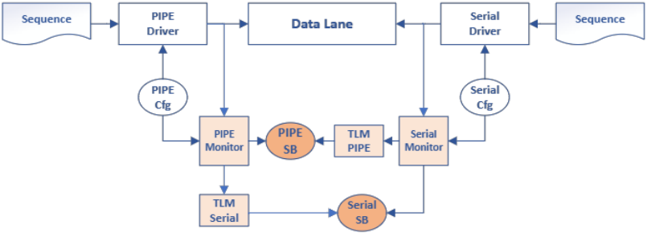
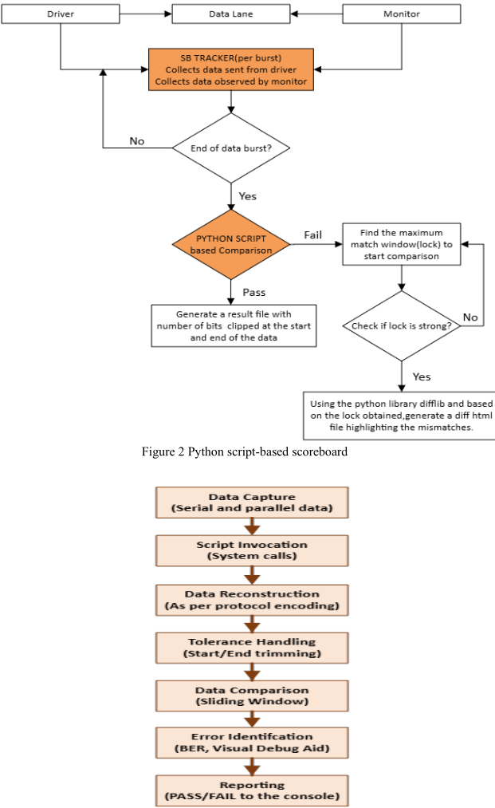
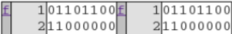
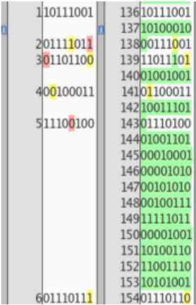

打破等待：SerDes 系统中可定制、实时的数据完整性验证后处理技术
论文针对单 PHY 同时支持多协议（如 PIPE 标准下的 PCIe、USB、DP）的 SerDes 系统验证中，TLM scoreboard 参考模型开发复杂、与 DUV 强耦合、bit 级失配在连续数据流中难以定位的问题，提出用独立于 DUV 的 Python 后处理脚本替代传统 TLM 参考模型完成数据完整性比对。方法上，由 TX/RX monitor 按协议规范在有效采样点将并行侧与串行侧数据按 burst 写入文本文件，Python 脚本在每个传输周期结束后经系统调用触发，采用滑动窗口机制对齐两路数据流并逐 bit 比对，并利用 Python 内置 difflib.HtmlDiff 生成 HTML diff 可视化调试报告，标出 burst 编号、symbol 计数与 bit 位置。与传统后处理必须等整个仿真结束不同，该方法支持 per burst/per symbol/per lane 等可定制粒度的中间结果实时查看。关键结论是：该方案已在 Intel SerDes 测试平台中实际取代 TLM scoreboard 达五年，复杂问题调试时间从数周缩短到数天，并通过去掉 TLM port 带来 12% 的仿真器性能提升。
在单子系统承载多协议 SerDes（PCIe、DP、USB 等）的场景下，传统基于 TLM 的 UVM scoreboard 需要为每个协议开发与设计本身同等复杂、且与 DUV 紧耦合的参考模型；随着数据速率提升和 PAM2/PAM3/NRZ 等调制方式多样化，BFM monitor 与 scoreboard 的维护成本持续增加。同时，由于调制方案复杂、jitter 等信号完整性问题以及数据流缺乏清晰的 symbol/byte 边界，bit 级失配的定位调试非常耗时；而传统后处理方法又必须等待整个测试结束才能得到比对结果。
用数据驱动的 Python 后处理流程替代 TLM 参考模型：TX/RX 接口上的 monitor 按协议规范在有效采样点将串行侧与并行侧原始比特流分别写入文本文件；每个 burst 数据完整可用后，通过 Python 系统调用触发比对脚本，传入配置与容差信息。比对采用滑动窗口机制：取一路数据流的固定窗口在另一路数据流上逐 bit 滑动，寻找最佳对齐位置，从而容忍偏移、多余比特并精确定位失配点。比对粒度可配置（per burst、per symbol、per lane 等），失配时用 difflib.HtmlDiff 生成 HTML diff 文件，将 TX/RX 数据并排显示并高亮差异及上下文（burst 编号、symbol 计数、bit 位置），实现可视化调试。
仿真器性能提升 12%：通过去掉 TLM port 并将比对卸载到仿真后可独立运行的脚本实现
复杂问题的调试时间从数周缩短到数天，因为无需再调试参考模型本身
Python 脚本 scoreboard 已在 SerDes 测试平台中实际取代复杂 TLM scoreboard 达五年
per burst 比对消除了传统后处理必须等仿真结束才能发现数据完整性失败的等待
相对传统后处理必须等待整个测试结束才能出结果，该方法在每个传输周期末按 burst 触发比对，使用户可在仿真执行过程中访问粒度可定制的中间结果；同时以纯数据驱动的 Python 脚本取代与协议紧耦合的 TLM 参考模型，支持新协议时通常只需调整数据采集与编码参数而无需重写验证逻辑；并借助 HTML diff 提供传统 scoreboard 因可观测性受限而难以实现的可视化调试能力。
相关度级别：high
命中能力域：2.4 设计验证方法学 | 2.7 EDA/验证自动化与 AI 辅助
理由：论文直接命中 2.4 设计验证方法学：核心是 UVM testbench 中 scoreboard/参考模型的替代方案、数据完整性比对与 debug 方法学，属于团队验证交付的核心技术栈；同时命中 2.7 验证自动化：以 Python 脚本/框架自动化比对触发、结果落盘与可视化调试报告生成，是可复用的验证自动化能力。团队负责 LPDDR/HBM4/UCIe 等高速接口 IP，其中 UCIe 等串行链路 PHY 同样面临多协议、高速率下 bit 级数据完整性比对与失配定位难题，monitor 采样 + 文件落盘 + 脚本比对的模式可直接迁移；12% 的仿真器性能提升也与团队大规模回归的效率诉求吻合。
建议动作：深入精读并做内部分享
Chandana K N chandana.kn@intel.com Intel，美国加利福尼亚州圣克拉拉 95054
Suresh Gandhi S suresh.gandhi.subramaniam@intel.com Intel，美国加利福尼亚州福尔瑟姆 95630
摘要 - 通用验证方法学（UVM）为实现基于事务级建模（TLM）的记分板提供了坚实的基础，这类记分板依靠能够复现设计行为的参考模型。然而，当需要在单个物理层（PHY）中支持多种设计标准（例如 PCIe、USB 和 DP）时，构建这些基于 TLM 的参考模型变得愈发具有挑战性。本文提出了一种新颖的方法，通过后处理技术来验证高速串行器/解串器（SerDes）系统中的数据完整性。与传统后处理必须等待整个测试结束不同，我们的方法使用户能够在测试执行期间访问中间结果。此外，这些中间结果的粒度级别可由用户自定义。通过利用 Python 的内置库，我们免除了构建复杂 TLM 参考模型的需要，显著缩短了周转时间并提升了调试效率。此外，该方法还提供了可视化调试工具，从而增强了数据完整性验证能力——而传统记分板由于可观测性有限，在这方面往往难以胜任。关键词 - SerDes、数据完整性、后处理
串行器/解串器（SerDes）系统是通过串行链路发送和接收数据的关键部件，负责在串行接口与并行接口之间进行数据转换。确保数据完整性对系统可靠性至关重要，尤其是随着数据速率不断提高，由抖动、噪声和信号完整性问题引发错误的可能性也随之增大。
传统上，数据完整性通过基于事务级建模（TLM）的记分板来验证，记分板将发送的数据与来自参考模型的期望数据进行比较。然而，随着协议和调制方案的日益多样化，这些参考模型的开发与调试变得与设计本身一样复杂。本文探讨了使用后处理技术与基于 TLM 的记分板来验证设计数据完整性的各自优缺点。
通用验证方法学（UVM）测试平台 1 由若干组件构成，例如代理（agent）、驱动器（driver）、监视器（monitor）、序列器（sequencer）和记分板（scoreboard），它们协同工作以验证被验证设计（DUV）。驱动器从生成符合协议事务的序列器中获取事务，并将其转换为模拟串行器/解串器（SerDes）系统行为的引脚级活动。监视器观察发送端和接收端的引脚级活动，并从这些活动中提取事务。正是这种双重需求使得传统记分板变得复杂，并与协议紧密耦合。记分板将驱动器发送的原始数据与监视器接收并处理的数据进行比较，并报告不匹配项，如图 1 所示。
当单个子系统承载 PIPE 标准所支持的多种 SerDes 协议（例如 PCIe、DP、USB 等）时，在总线功能模型（BFM）中模拟设计行为的复杂性会显著增加。每种协议都有其自身的一套规范、信令方法和数据完整性检查。随着数据速率的提高，BFM 监视器必须进行更新，以支持更高的速度以及 PAM2、PAM3 和 NRZ 等调制方案。记分板必须在这两个领域之间架起桥梁：它既需要理解协议级事务，又需要理解比特级的 SerDes 数据。这需要投入大量精力为每种协议开发基于 TLM 的参考模型，而这些模型与设计本身一样复杂，并且与 DUV 紧密绑定。由于复杂的调制方案、信号完整性问题（抖动）、协议复杂性以及有限的可观测性，调试 SerDes 系统中的数据完整性不匹配问题可能尤为困难。在一个形似时钟信号、缺乏清晰符号或字节边界的连续数据流中精确定位比特级的不匹配，既繁琐又耗时。
为了应对多协议 SerDes 系统中的这些挑战，我们提出了一种基于 Python、独立于 DUV 的后处理技术来验证数据完整性。该方法旨在简化这一流程，并减少在 UVM 测试平台中开发协议专用、基于 TLM 的参考模型所需的开发工作量。

在 SerDes 及其他数据传输系统中，用于数据完整性的后处理技术是指在接收数据被捕获之后对其进行分析，以确保其与发送的数据相匹配。这一过程在物理传输和接收过程完成之后进行，因此得名“后处理”。其目标是验证数据在传输过程中未发生损坏。我们开发了一个基于 Python 2 的通用脚本，用于在每个传输周期结束时，基于滑动窗口机制，以粗粒度和细粒度对每个突发（burst）的并行数据与串行数据进行完整性比较，如图 2 所示。这种支持逐突发比较的方法消除了必须等到仿真结束才能验证数据完整性故障的需要，而这正是后处理技术的一个常见局限。它还提供了一个可视化调试工具，可生成类似 tkdiff 的输出，提供 System Verilog/UVM 本身难以切实提供的关键调试信息。
待比较的数据通过按照协议规范在有效点对接口信号进行采样，被捕获到两个文本文件中（并行侧的 pipe_<laneid>_<burstid> 和串行侧的 pad_<laneid>_<burstid>）。原始比特流由连接到 TX 和 RX 接口的监视器（monitor）写出。这些监视器将串行化数据流和并行数据流记录到文本文件中，随后由 Python 脚本读取使用。或者，也可以使用后处理工具从波形中提取数据，但出于准确性和自动化的考虑，首选基于监视器的直接捕获方式。一旦某个突发的数据完全可用，便通过 Python 系统调用触发后处理比较脚本，并以这些文件以及其他配置和容差相关信息作为输入。
用于数据完整性验证的基于 Python 的后处理流程包括：
该比较完全是数据驱动的。为支持新协议，我们通常只需调整数据捕获和编码参数，而无需重写整个验证逻辑。后处理最适合用于数据完整性和逐位精确检查，但并不适用于所有协议或时序检查。

滑动窗口机制是 Python 记分板（scoreboard）脚本中用于对齐和比较数据流的关键技术，尤其适用于发送数据与接收数据之间可能存在偏移、多余比特或不匹配的情况。该方法从一条数据流中取出一个固定大小的片段（窗口），并在另一条数据流上逐位比较，以找到最佳的对齐或匹配位置。这在高速 IO 和 SerDes 验证中尤为有用，因为协议开销、编码或物理层效应可能导致数据无法完全对齐。通过找到最佳对齐位置，用户可以精确定位不匹配发生的位置，从而更容易调试数据完整性问题。
所涉及的步骤如下：
例如，考虑两条待比较的数据流：
TX 数据：ABCDEF，RX 数据：XXABCDEFYY
由于开头多余的 XX 和结尾多余的 YY，直接比较将会失败。若采用大小为 6 的滑动窗口：
脚本将在窗口位置 3 处报告通过。
可视化调试辅助是指在后处理过程中使用由 Python 脚本生成的 HTML diff 文件。这些文件提供了一种图形化、交互式的方式来检查和调试 SerDes 系统中发送与接收数据流之间的数据完整性不匹配。
在捕获并重构 TX 和 RX 数据流之后，脚本使用滑动窗口机制对二者进行比较。该比较可以在可配置的粒度上执行（按突发、按符号、按通道等）。当发现不匹配时，脚本会使用 Python 的内置库（如 difflib.HtmlDiff）生成一个 HTML 文件，以可视化的方式突出显示两个数据流之间的差异。
HTML diff 文件将 TX 和 RX 数据并排显示。匹配的片段正常显示，而不匹配的部分则被高亮标出（通常以颜色标示）。该文件包含诸如突发编号、符号计数和位位置等上下文信息，便于定位和理解错误。工程师无需在波形中手动追踪位级的不匹配，只需在浏览器中打开该 HTML 文件，即可立即看到不匹配发生的位置及其内容。这对于长数据流或错误非常细微的情况（例如数千位中仅有一位发生翻转）尤为有用，并且能够显著缩短调试时间，特别是对于表 I 中所强调的复杂或间歇性问题。
假设如图 4 所示，在突发 2、符号 0 处存在一个不匹配。HTML diff 将会：


| Feature | TLM based Scoreboard | HTML Diff Scoreboard |
|---|---|---|
| Bit-level pinpointing | Manual, slow | Automatic, visual |
| Protocol dependency | High | Low (agnostic) |
| Debug time | Long | Short |
| Usability | Low | High |
| Realtime feedback | Yes, by default | User configurable |
| Data capture overhead | Minimum | Raw data stored to disk |
| Feature | TLM based Scoreboard | HTML Diff Scoreboard |
将基于 Python 脚本的记分板集成到 SerDes 测试平台中已被证明是一种变革性方法，在过去五年中有效地取代了复杂的基于 TLM 的记分板。这一转变通过消除对参考模型本身进行调试的需求，大幅缩短了复杂问题的调试时间——从数周缩短到仅仅数天。该技术还带来了 12% 的仿真器性能提升，其方式是去除了 TLM 端口，并将比较工作卸载到可在仿真结束后独立运行的脚本上。
通过后处理技术生成的基于 HTML 的 diff 文件进一步简化了调试流程。尽管后处理技术在各种验证领域已被广泛使用，我们的方法克服了传统上必须等到仿真结束才能进行处理的难题，从而实现了更高效、更及时的数据完整性验证。采用该方法所获得的收益包括：
尽管传统记分板提供了紧密的协议集成以及功能覆盖率挂钩（hooks），基于脚本的方法仍可进一步扩展，以便将高级覆盖率与功能安全度量集成到后处理流程中。本文着重阐述了基于 Python 的后处理数据完整性验证在基于 SerDes 的协议中的优势与应用；该方法还有望扩展到任何需要健壮数据验证的协议。